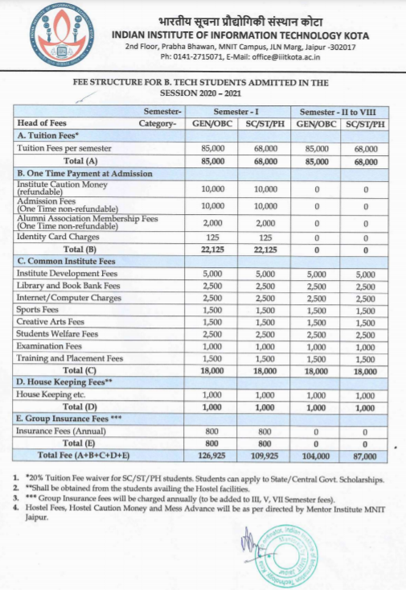

Branches Offered
- Our college has current intake of 143 students in C.S.E. Branch
- Our college has current intake of 72 students in E.C.E. Branch
Regulations
IIIT Kota follows the regulations according to its Memorandum of Understanding (MoU) & Memorandum of Association (MoA). Statutes, ordinance and other prevailing rules of the mentor institute (MNIT Jaipur) are being followed.
MNIT Jaipur Rules and Regulations
Fee Structure
Building Status at Permanent Campus
As of now, IIIT Kota does not have its own building. It is being operated from the premises of the mentor institute (MNIT Jaipur). However the boundary wall along with tree plantation has been completed in its permanent campus at Ranpur near Kota. Further, the director office, conference hall, accounts and establishment block, academic block with adequate number of lecture theatres, labs and faculty cabins, seminar hall with capacity of more than 200 persons, computer center, library, workshop and store, boys and girls hostels, guest house, director's and staff residencies, transit accommodation and other development work such as rain water harvesting structure, sewerage treatment plant, overhead tank are to be taken up in the phased manner on receipt of required funds from the central and state governments for which the matter is under vigorous pursuance with the authorities concerned.
Proposed Structure of IIIT Kota


Our official Website : Our Website
Faculty at IIIT KotaReach Us